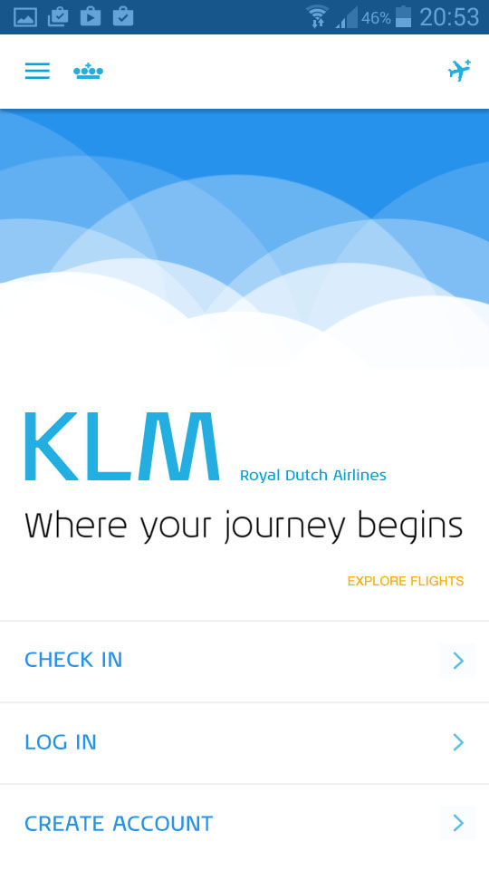
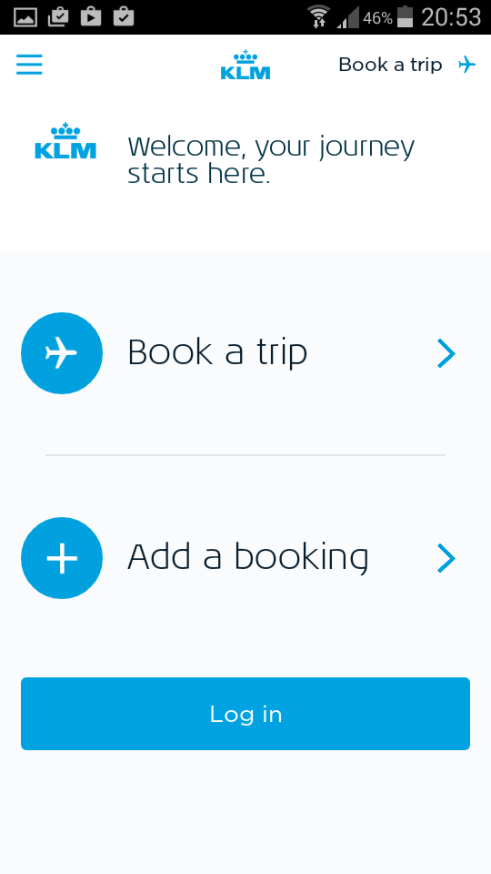
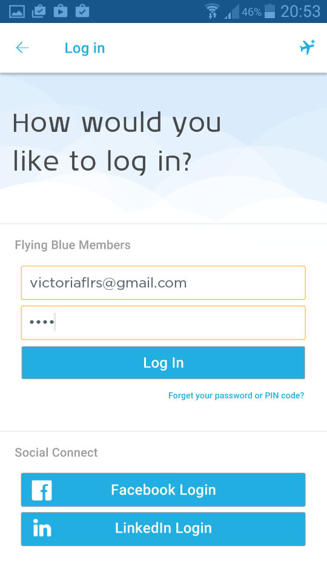
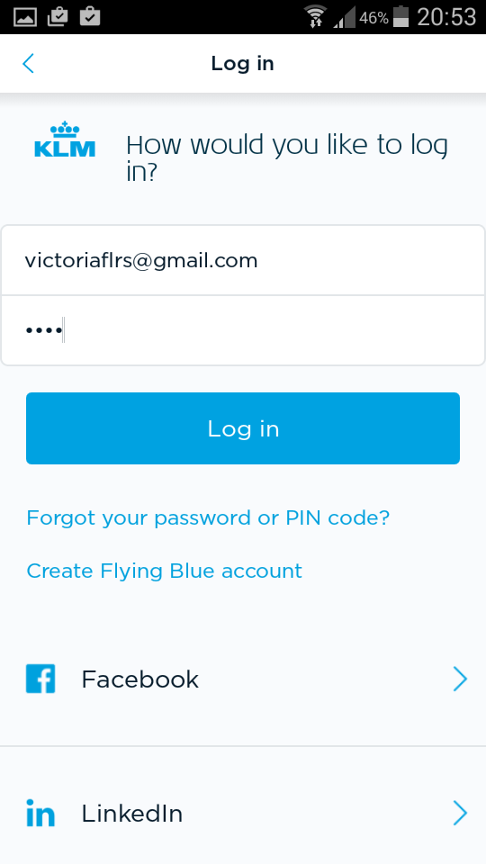
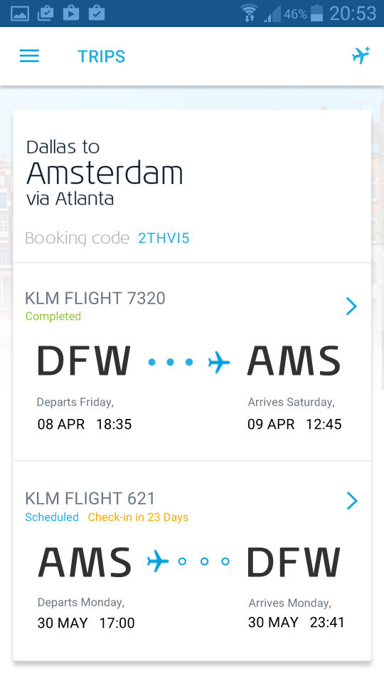
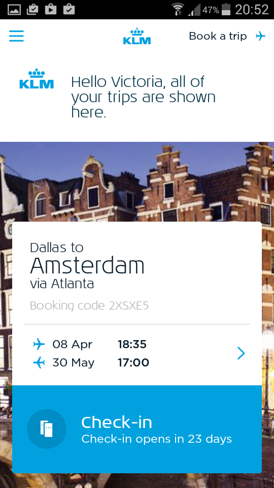
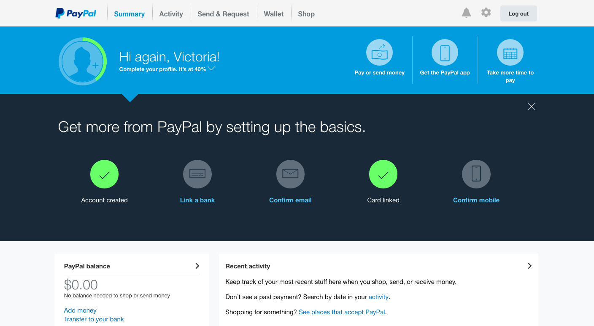
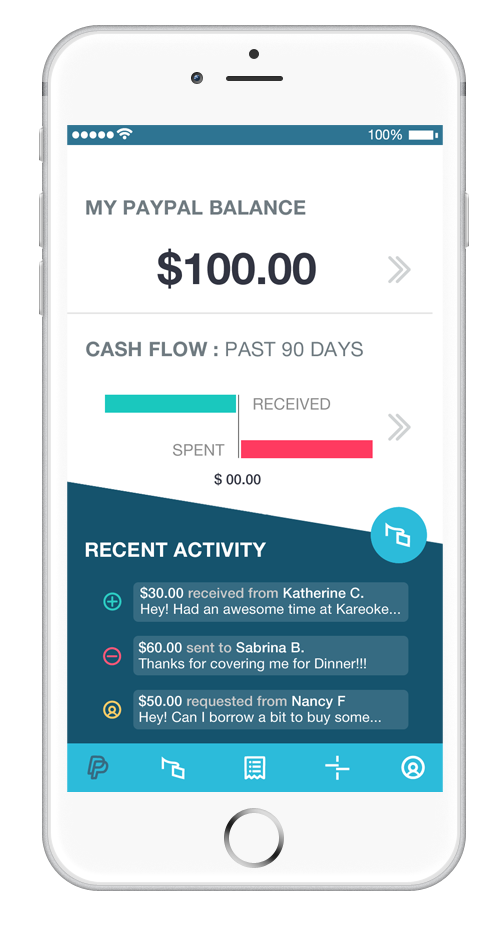
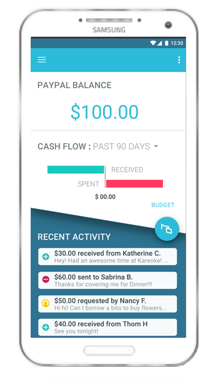

Design Challenge
KLM & PayPal Redesigns
Exercises in UI Improvement and Cross-Platform
UX/UIRedesign
OVERVIEW
Context
Design challenge given by Bunq | 2016
Task
Redesign firsst three screens of KLM iOS app & one screen cross-platform for PayPal app.
Process
Concept Dev. > Company Branding Research > User Research of their current apps > Design Research > Mockup Implementation & Iteration
Contribution
I created all visual assets for redesign mockups following company identity guidelines in one week.
Tools
Google Material Design Guide, Adobe Photoshop, Adobe Illustrator, Hand Sketching
KLM:
AT A GLANCE
DESCRIPTION
Goal
Energize KLM UI while maintaining a hint of its traditional aesthetic.
Look & Feel
Clean, punctual, hospitable, friendly, capable, and modern.
Image
Branding should maintain KLM style of class, allure and confidence.
Needs (according to users and KLM)
Open, pragmatic, progressive, lively, fresh & maintain a feminine touch.
Design Approach
I chose to do the first three screens for KLM as a user with a login (since I do fly KLM). I felt in general that the KLM design was a little withdrawn for a brand that pronounces user friendliness as one of its guiding principles. For this redesign I focused on giving the UI more breathing space, omitting unnecessary words, and creating a more intuitive visual and structural hierarchy that matches the general user’s model of the flying process at the airport.
I changed their homescreen to support the most common needs: to check in, log in for changes, and create an account. I added ‘Check-in’ for the common traveler who, at the airport, is in a rush and needs to find their itinerary fast. In this home screen, I took away KLM at the top and left the crown: it’s more symbolic, and technically matches Material design more (since Google recommends not having company branding within the app). I also felt like the homescreen was a chance to shine in terms of look and feel.
From my research into KLM’s vision I felt they were/are still struggling with staying traditional and professional while updating. I added a sort of geometric cloud theme at the top using circles (to match the crown icon design they already have), with a white gradient. Though clouds might normally be considered cliche, I think here it feels feminine (as KLM wants), calming for first-time flyers, and youthful in the sense that they do not take themselves too seriously.
Details on screen designs
The login screen is minimal and follows with the same but lighter background from the opening screen for visual continuity.
The third screen for member login is my version of a more informative but minimal itinerary view. Their old screen is a bit confusing in the sense that it shows round trips as if it is one ticket, which creates confusion if you have already taken the first flight. At a minimum, it should have ‘to’ and ‘from’ and flight times at the first screen. Clicking on this screen can serve as a drill-down to more information about times and transfers, since we look up dates and time often but not so much transfer time etc. I kept their theme of ‘destination city picture in the background’ here, since it makes it more exciting for the traveler to see where they are going.
Lastly, I added 3 colors to their palette. KLM had an April Fools’ Joke about adding orange to their palette, which everyone loved and they said “just kidding!” I found that Rietveld had been consulted to design the interior but that his work was never implemented. I decided to add Rietveld’s colors back to the UI to use as secondary and highlight tones; they are the blue, orange, and red (hardly used). The blue is in the cloud gradient, which actually has the current KLM blue hue within its gradient! I also kept their Danish type NoaLT for headlines and used Roboto for all other informative text.
I hope overall it appears more welcoming, less cluttered, intuitive, and minimal so as to calm any stress the user might have regarding flying.
First Screen: Launch
AFTER
BEFORE
Second Screen: Member Login
AFTER
BEFORE
Third Screen: Viewing Itinerary
AFTER
BEFORE
PayPal:
AT A GLANCE
DESCRIPTION
Goal
Maintain professional decorum, brighten the colors to be less neutral, and create an air of excitement for engaging in a more social and positive p2p platform.
Look & Feel
Minimal, endeavoring, elegant, and contemporary.
Needs
Budget/Goal Setting, summary of financial health, and on-the-go ease.
Feature Priorities (according to PayPal)
P2P Transactions, Transaction Details, Payment Activity (pending vs. completed), recent contacts, and Friends/Family requests.
Design Approach
In general I chose to approach PayPal with a more strict vision of their user base. Most of the people I know who use PayPal, do so because they have to transfer large sums of money, usually a few times in their life, or rarely on sites like eBay. I feel a large amount of their users are older and attached to the tradition of PayPal, but also entrepreneurs/venture capitalists/business owners. I felt the target audience was accustumed to the dark gender-neutral blues of PayPal with its old-school financial aesthetic.
For this reason, my redesign is conservative in making large scale aesthetic shifts. However, I did try to add some youthful connotation by slanting the Material of the top sections in the app designs to add some flair to the layout; in addition, this connotes our mental model of a wallet. I also took out the gradients since those they fall outside Material design.
Details on screen designs
I designed the overview home screen (after login) for the android and iOS versions, and the on-boarding screen for the desktop view. For the app views, I wanted to support three main needs: to see one’s balance, basic cash flow (so they can see whether they should spend money), and most recent activity/notifications.
For the desktop view, I took a different approach; I had a PayPal account that never linked properly from years ago, so I chose to focus on user retention in this process of on-boarding. Here, I sought to make it less frustrating to add a ton of tiny very personal details by making it feel rewarding and less visually heavy (lighter blue, simpler symbols). I also chose to hint in the desktop version at what PayPal can do for the user besides the task they originally came to the site for-- I added a friendly tagline and created a “quick send/request” feature toolbar. Overall I addressed two user personas, the businessman and the social tech-y. I built in the budget finance function since PayPal says they want to eventually do this, but also made it easier to send/receive money for the user in a hurry from one social event to another.
In general I changed their light and dark blues, added yellow for ‘pending’, green for ‘positive/gain’, and magenta for ‘spent’ (magenta because red is perceived as more negative). I clumped the send/request transaction into one task (the action button) since a transaction in code and in life is the same thing whether it is leaving or coming; I hope this analogy helps create a more positive mental model for the user about how their money flows in society. I also created new symbols for the toolbar as well as one for the action button (the card/dollar symbol).
PayPal Desktop Home Screen: After Member Login
BEFORE
AFTER

iPhone 6: AFTER
Samsung 4: AFTER
BEFORE